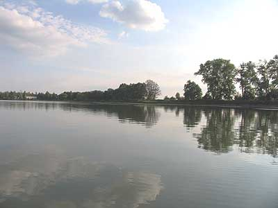
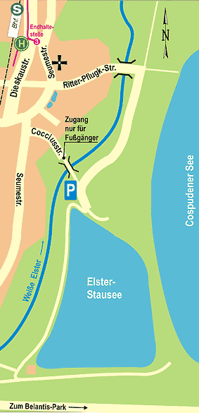
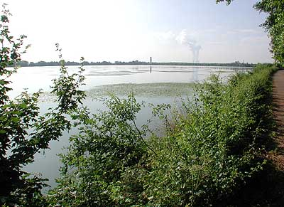
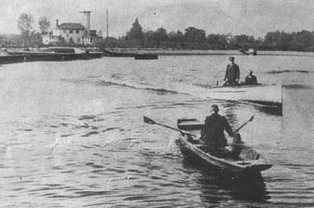

|
|
|
Der Elsterstausee Lage: Nur knapp 10 km südwestlich vom Stadtzentrum bilden die ehemaligen Orte Knauthain, Knautkleeberg und Hartmannsdorf das am dünnsten besiedelte Gebiet der Stadt Leipzig. Besonders Knauthain hat sich Teile seines historischen, dörflichen Charakters erhalten. Neben Modernem, wie dem ehemaligen Autohaus Heil und dem Berufsbildungszentrum für Hör- und Sprachgeschädigten (BBW) findet man hier noch alte Guts- und Herrschaftsbauten, Bauernhöfe, Fachwerkhäuser und eine Dorfkirche, deren älteste erhaltenen Teile aus der Entstehungszeit um 1125 stammen. Im Süden der Gemarkung Knauthain liegt der Elsterstausee, der nach seiner Entstehung viele Jahre lang das größte stehende Gewässer im heute seenreichen Leipziger Umland war. Anfahrt Mit dem Auto erreicht man den Elsterstausee stadtauswärts über die Dieskaustraße. Am Autohaus Heil biegt man links in die Ritter-Pflugk-Straße ein und folgt dieser am Gutsgelände links vorbei bis an die alte steinerne Bogenbrücke über die Weiße Elster. Hinter der Brücke fährt man rechts. Hier führt die Zufahrtsstraße zum Elsterstausee durch Reste des Auenwaldes und durch das Hochflutbett der Elster bis zum Parkplatz am Fuße des Stausees. Wer den Elsterstausee mit Nahverkehrsmitteln erreichen möchte, steigt in eine Straßenbahn der Linie 3 und fährt bis zur Endstelle am Bahnhof Knauthain, der übrigens auch per S-Bahntarif aus dem Leipziger Norden, wie zum Beispiel aus Gohlis schnell erreichbar ist. Der 20-30minütigen Fußweg beginnt über die Gleitsmannstraße hin zur Seumestraße. Dieser folgt man nach rechts in südlicher Richtung, vorbei an der Kirche und den Knauthainer Dorfteichen bis links die Cocciusstraße abzweigt. An deren Ende kreuzt man den Knauthainer Elstermühlgraben und überquert ca. 200 m weiter auf einer Fußgängerbrücke die Weiße Elster. Von hier aus sind es noch 3-4 Fußminuten bis zum Stausee. Die stadtnahe Lage des Elsterstausees lädt aber vor allem zu einer Radtour ein. Aus dem Leipziger Westen kommend radelt man bis Knauthain und dann zwischen den oben beschriebenen Wegen für Auto und Fußgänger wählen. Radfahrer aus Schleusig, Leipzig-Mitte und der Südvorstadt folgen den Wegen an den Ufern des Elsterflutbeckens in südlicher Richtung bis zur Brückenstraße. Dieser folgt man nach rechts und biegt nach ca. 500 m links in den Lauerschen Weg ein. Nach den letzten Gärten auf der rechten Seite zweigt etwas versteckt ein idyllischer Weg ab, der entlang der Elster durch Wald und Wiesen bis an den Elsterstausee führt. Aus dem Leipziger Süden kann man durch den südlichen Auenwald Richtung Brückenstraße fahren und wie oben beschrieben den Elsterstausee erreichen, oder man radelt am Wolfswinkel vorbei zur Nordseite des Cospudener Sees. Hier hält man sich rechts und fährt etwa eine ¼ Runde um den See. Am Westufer mündet ein Weg ein und ein kleines Hinweisschild weist zum nur ca. 300 m entfernten Elsterstausee.
Geschichte: Im Zusammenhang mit umfangreichen Regulierungs- und Hochwasserschutzmaßnahmen an Leipziger Flüssen begann im Jahr 1933 der Bau des Elsterstausees im Rahmen einer der ersten, großen Arbeitsbeschaffungsmaßnahmen im Raum Leipzig. Bis zu 900 vorher meist erwerbslose Menschen arbeiteten am Aushub des Sees und am Bau der Dämme. Schon im Juli 1934 waren die umfangreichen Arbeiten abgeschlossen. Mit dem Elsterstausee entstand im von zahlreichen Flüssen geprägten Leipziger Umland erstmals ein großes stehendes Gewässer. Mit ursprünglich 105 Hektar Fläche war der Stausee zum einen etwa so groß wie der bekannte Berliner Wannsee und zum anderen fast 30 Jahre lang das größte stehende Gewässer im Leipziger Umland. Damals staute der rund 1,5 – 2,0 Meter tiefe See den aus Profen kommenden Elstermühlgraben, der in einem Düker unter der Weißen Elster durchgeführt wurde. Sein Wasser füllte den See und man erhoffte sich einen Reinigungseffekt. Anschließend wurde das Wasser wieder unter der am Stausee vorbeifließende Elster durchgeführt und in den alten Elstermühlgraben abgegeben. Mitte der 70er Jahre stand die Zukunft des Stausees das erste Mal auf dem Spiel. Im Zuge der Ausweitung des Tagebau Zwenkau sollte auch die Kohle unter dem Elsterstausee abgebaut werden. Letztendlich wurde die Weiße Elster weiträumig nach Westen umverlegt und der Stausee 1977 um die Hälfte verkleinert. Heute mündet der Mühlgraben bei Kleindalzig in die umverlegte Weiße Elster und erreicht den Stausee nicht mehr. Das nun ca. 50 Hektar große Gewässer musste künstlich abgedichtet werden und kann nur noch über Pumpen aus der tieferliegenden Elster befüllt werden. Eine zweite bedrohliche Situation für das bei der Leipziger Bevölkerung beliebte Gewässer entstand im Jahr 2002. Im Zusammenhang mit der Verlegung der Elektroleitungen zum Belantispark kappte der Stromversorger die Zuleitung für die Pumpstation. Das Wasser war abgegraben. Der massive Druck von unzähligen Leipziger Bürgern zum Erhalt des Elsterstausees ermöglichte in Zusammenarbeit mit dem Leipziger Umweltamt eine Verpachtung an die GAF. Anschließend wurde durch private Initiative ein neuer Stromanschluss gelegt, die Pumpen von der Fachfirma Polzin gewartet und repariert, der Schieber in der Elsterwasserzuleitung repariert und im Umfeld viel aufgeräumt. Besonders schwierig war die Reparatur der noch aus dem Jahre 1934 stammenden Ablaufeinrichtung. Dazu musste der See im Winter 2005/06 ohne Wasser bleiben. … mehr zur Historie. Nutzung: Seit der ersten Flutung nach seiner Fertigstellung wird der Elsterstausee von den Leipzigern als Badesee genutzt. Doch das schon in den ersten Plänen vorgesehene Freibad wird erst nach dem 2. Weltkrieg gebaut. Bis in die 70er Jahre war es die erste Adresse für Badelustige. Später machten der Kulkwitzer See, die Kiesgruben bis hin nach Naunhof und ab 2000 schließlich der Cospudener See dem Elsterstausee Konkurrenz. Heute nutzen vor allem Familien mit kleinen Kindern die schattigen Liegewiesen am Nordufer und den flachen Strand mit dem sich schnell erwärmenden Wasser. Auf dem Elsterstausee fuhren viele Jahre lang die Boote der Leipziger Segler, die Kutter des Seesportclubs und bis in die 70er Jahre ein Fahrgastschiff. Heute sind die Wassersportler auf die größeren Gewässer Kulkwitzer See und Cospudener See abgewandert. Nur der Bootsverleih Wittig bot noch bis zuletzt die Möglichkeit, bei einer Kahnpartie zu erleben wie sich die Ruhe auf dem Wasser mit dem Rauschen des Windes vermischt. Die bedeutenste Nutzung war wohl aber die Fischerei. Schon 1935/36 wurden über einhunderttausend Karpfen, Schleie und Aale in den See gesetzt. Von 1949 bis 1990 war der Fischermeister Rudolf Garbe mit Leib und Seele für die Bewirtschaftung des Elsterstausees verantwortlich. Während der gesamten Zeit blieb der Karpfen der Hauptwirtschaftsfisch. Eine Rekordernte wurde 1974 eingeholt – 310 Tonnen Speisefische gingen in die Netze. In den Jahren 1949/50 wurde das erste Fischereigehöft in privater Regie errichtet. Ab 1955 erfolgte die Bewirtschaftung unter der Hoheit des VEB Binnenfischerei Wermsdorf. Im Zuge der Braunkohlenförderung wurde der Stausee halbiert und der alte Fischereihof 1980 abgebaggert. Nach der Verkleinerung des Elsterstausees entstand an der Südseite des Sees ein neuer Fischereistützpunkt, der heute privat bewohnt und teilweise als Wirtschaftshof des Anglerverbandes Leipzig e.V. genutzt wird. Die großen Abfischungen im Herbst jeden Jahres waren in allen Zeiten Anziehungspunkt für unzählige Besucher. Fischerei in der Großstadt hautnah erleben – das gibt es nicht oft in Deutschland! Diese Tradition wurde durch die Gemeinschaft der Angler und Fischer zur Gewässerbewirtschaftung e.V. mit den großen Schaufischen am Elsterstausee zeitweilig wiederbelebt. Auch künftig könnte zum Beispiel eine extensive Fischerei natürlich gewachsene Karpfen für das Weihnachts- oder Silvestermahl der Leipziger Bürger liefern. |
| [Home] [Elsterstausee] [Wir laden Sie ein!] [Geschichte] |